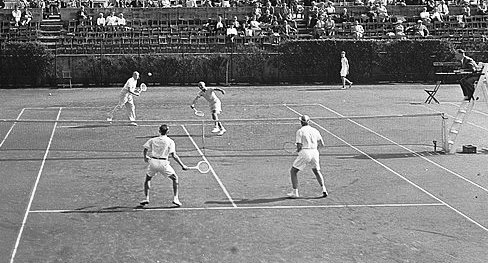
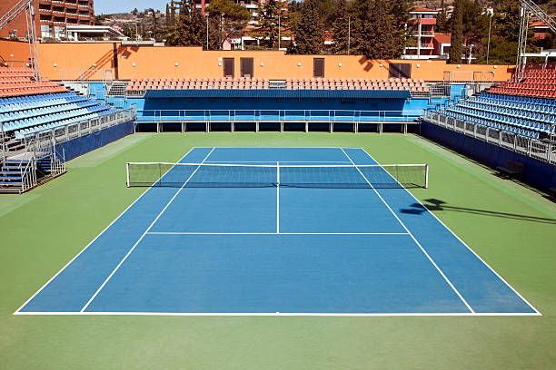

Le tennis est né entre 1850 et 1870. Ce sport est une adaptation anglaise du jeu de paume. La première mise en jeu s'effectuant à quinze pieds, puis trente, puis quarante, d'où la façon particulière de compter les points dans le tennis moderne. Il semble que le premier tournoi de tennis eut lieu en août 1876 sur un court aménagé dans la propriété de M. William Appleton à Nahant dans le Massachusetts

Le tennis utilise un système de points unique :
A 40-40, il faut deux points d'écart pour gagner : avantage puis jeu.
Pour gagner un set, un joeur doit remporter 6 jeux avec au moins 2 jeux d'écart.
Le tie-break est un jeu spécial qui permet de départager les joueurs en 7 points.